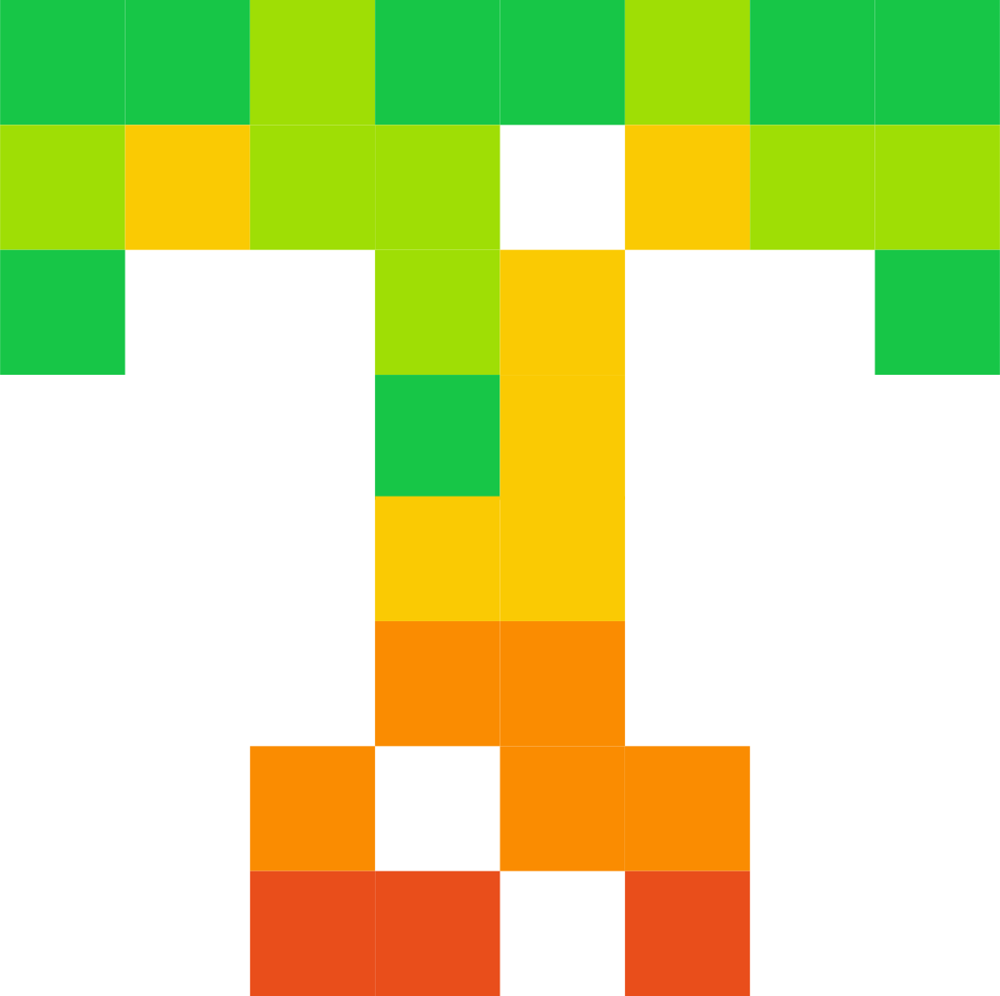

Carnet d'entraînement ·
Sous les
50:00
Dernière mise à jour
Chaque 10 km couru, placé sur une même graduation. La distance qui reste à gagner est visible, littéralement.
Zones cardiaques — méthode Karvonen
Dix mois, sept blocs. Chaque bloc a une intention unique — empiler les objectifs, c'est n'en atteindre aucun.
Les repères qui comptent sur la trajectoire — pas une liste de tâches, des points de passage.
Règle du calendrier
Volume hebdomadaire
Kilomètres courus par semaine, comparés à la cible du programme.
Coût cardiaque
Battements par kilomètre : fréquence cardiaque moyenne × durée d'un kilomètre. Plus le chiffre baisse, plus tu deviens économique. C'est l'indicateur qui compte le plus en ce moment, parce qu'il neutralise l'allure et le terrain plat ou vallonné.
Allure et fréquence cardiaque, séance par séance
Chaque point est une séance. En bas à droite, c'est là qu'il faut aller : rapide, et pour pas cher.